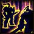

World Buffs
On this page we will be speaking about world buffs and what they do in other pages we would also typically go over where you can get these however with there being so many and some locked in dungeon content which needs to be done in a certain way or even quest hand ins I will be providing links to the WowHead page for you refference in regards to that and instead what we will be doing hear is goving over the what the buffs are in detail and what classes benefit from which ones
Warchief's Blessing
Warchief's Blessing is a Horde exclusive world buff so Alliance players will not be able to get this buff. (there is a way for Alliance players to get this through a mind control exploit however as this is aimed at newer players we will not be going over that)
As part of the Onyxia Attunement for the Horde the third quest in the chain is called "For The Horde!"" where Thrall sends the player to kill Warchief Rend Blackhand in Blackrock Spire. Upon retrieving the Head of Rend Blackhand and returning it to Thrall, Thrall will grant the player one of three quest rewards. Once completed Thrall will send out a lightning shock that travels through all Horde Players in Orgrimmar granting them Warchief's Blessing, which lasts for 1 Hour. For more info click here to be taken to the offical WowHead page.
Rallying Cry of the Dragonslayer

The Rallying Cry of the Dragonslayer is a buff that grants the player increased spell critical strike chance by 10%, Melee and ranged critical strike chance by 5% and grants 140 attack power. This buff will last for 2 hours on application or until death. This is a buff that all class regardless of role will want to aquire.
Whenever Onyxia or Nefarian are killed players are able to loot their Heads from their corpse the head of Onyxia and Head of Nefarian. These Heads will activate a Quest requiring the player to turn the head into a high ranking member of their faction either Grand Admiral Jes-Tereth in Stormwind for the Alliance or Eitrigg in Orgrimmar for the Horde. Once the quests are completed the Head will be mounted at the faction's capital entrance for all members of that faction to see the head mounted on display. This is also a good way to spot if a head was turned in recently so you can keep track. For more info click here to be taken to the offical WowHead page.
Spirit of Zandalar
Spirit of Zandalar is a buff that grants the player 10% increased movement speed and a 15% increase to all stats. This buff will last for 2 hours on application or until death. Due to the 15% increase to all stats this is again another buff that all class will be looking to get regardless of role.
This buff will not be available straight away if you are on a new classic server and will only be available once Zul'Gurub is made available one a group clears Zul'Gurub and kills Hakkar a player is able to loot Heart of Hakkar which starts a quest. The quest requires the player to travel to Molthor on a small island in the top left corner of the map in Stranglethorn Vale known as Yojamba Isle. When the Heart is turned in that player can choose between three different trinkets. Whenever the Heart is turned in every player Horde or Alliance on Yojamba Isle or in Booty Bay will receive the Spirit of Zandalar buff. For more info click here to be taken to the offical WowHead page.
Darkmoon Faire Fortune Buffs

Darkmoon Faire Fortune Buffs are different to most other world buffs in World of Warcraft in that where you will find yourself getting all the other buffs each weak before going to a raid the Darkmoon Faire is not always available to players so these buffs are actually time gated as to when you can get them but this is been known to change depending on what game version you are playing so you may find your experience is different.
The Darkmoon Faire happens during the first week of every month, rotating between Elwynn Forest and Mulgore. At the Faire Sayge is a fortune teller that gives a buff based on the answers to a series of questions Sayge will grant a buff that lasts for 2 hours, granting 10% increase to a specific stat. The different buffs are Increase damage by 10%, Increase all magical resistances by 25, Increase armor by 10%, Increase Intelligence by 10%, Increase Spirit by 10%, Increase Stamina by 10%, Increase strength by 10% and finally Increase Agility by 10%. Obviously because of the wide range of different options this buff provides this will yet again be another buff all players will be looking to get when the Darkmoon Faire is taking place. For more info click here to be taken to the offical WowHead page.
Dire Maul Buffs

The Dire Maul Buffs are a collection of 3 buffs Mol'dar's Moxie grants a 15% increase to Stamina. Fengus' Ferocity grats 200 attack power and finally Slip'kik's Savvy grants 3% spell critical hit. All of these buffs can be taken at the same time and last 2 hours on application or until death
The Dire Mail buffs also referred to as a “DM Tribute Run” are when players will form 5 man groups and run through the dungeon Dire Maul North skipping as many bosses as possible using clever creature reset mechanics such as a Rogue Vanish or a Hunter Feign Death allowing the group to reach the final boss without killing any prior bosses in the dungeon. When players accomplish this and after they kill King Gordok each player in the group will receive a buff called King of the Gordok allowing them to speak to the Ogres inside the dungeon. The group will then travel back through the dungeon speaking with each skipped boss but with the king buff everything is now friendly so the tricks needed to get there wont be needed to get out. upon speaking with the bosses they will be granted a specific buff that lasts for 2 hours. Speak with Guard Mol'dar, Guard Fengus, and Guard Slip'kik to receive the buffs mentioned above. this is technically one of the first buffs you can skip getting as a melee damage dealer as you will gain nothing from the 3% spell crit however you will still want to aquire the other two buffs any way so it just means you are speaking to 2 of the bosses rather than 3. For more info click here to be taken to the offical WowHead page.
Songflower Serenade
Songflower Serenade is a buff that grants the player 5% crit chance to all versions of damage as well a 5% increase to all stats. This buff lasts for 1 hour or until death.
The Songflower Serenade buff is granted from repeatable quests offered by Arathandris Silversky and Maybess Riverbreeze. Make sure you have Cenarion Beacon Cenarion Beacon in your inventory otherwise you will not be able to complete these quests. You can speak with the Quest givers to get one or if you happen to lose it they will also give you a replacement. If you don't have one in your inventory and the Quest giver won't give you a new one, that means it is probably in your bank so make sure to check! Due to this buff giving a flat 5% crit bonus to all damage types as well as yet another 5% increase to all stats this will be another buff you will be getting regardless of what role you are playing. For more info click here to be taken to the offical WowHead page.